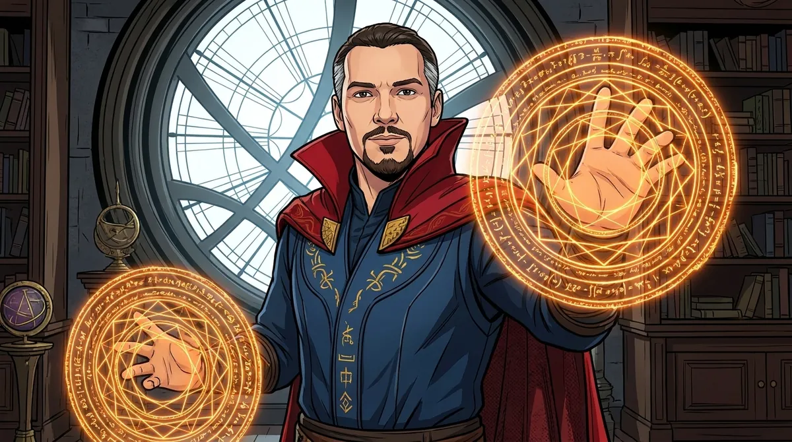

📡 Küldetés-eligazítás

📡 Dr. Bizarr: A Csatatér-térképen pontokkal jelöljük a helyeket, egyenesekkel az irányokat, síkokkal a felületeket. Ebben a modulban megtanulod a jelöléseiket, és megvizsgáljuk, hogyan illeszkednek egymáshoz. A pont, az egyenes és a sík alapfogalom: nem határozzuk meg őket más fogalmakkal. Tulajdonságaik leírásához néhány axiómából indulunk ki.
A geometria felépítésében külön szerepe van a fogalmaknak és az állításoknak. Az alapfogalmakat nem definiáljuk; a további fogalmakat ezek segítségével határozzuk meg. Az axiómákat bizonyítás nélkül fogadjuk el, a tételeket pedig az axiómákból és a már bizonyított állításokból vezetjük le. Ezen a lapon euklideszi geometriával foglalkozunk.
Pont, egyenes, sík
📗 Az alapfogalmak
A pont, az egyenes és a sík a geometria alapfogalmai. A pontnak nincs kiterjedése. Az egyenes mindkét irányban korlátlanul folytatódik; a sík minden irányban korlátlanul kiterjed. Jelölésük:
- pont: nagybetű — \(A,\ B,\ C,\dots\)
- egyenes: kisbetű vagy két különböző pontja — \(a,\ b,\dots\) vagy \(AB\)
- sík: görög kisbetű — \(\alpha,\ \beta,\ \gamma,\dots\)
📗 Illeszkedés
Azt mondjuk, hogy egy \(A\) pont illeszkedik az \(a\) egyenesre (jelben \(A\in a\)), ha az egyenes áthalad a ponton. Ha nem, akkor \(A\notin a\). Ugyanígy beszélünk pont és sík illeszkedéséről (\(A\in\alpha\)). Egyenes és sík esetén viszont azt mondjuk, hogy az egyenes a síkban fekszik — jelben \(a\subset\alpha\), mert az egyenes nem eleme, hanem részhalmaza a síknak.
Illeszkedési alaptények
📘 Amit az illeszkedésről tudni kell
- Két különböző pont pontosan egy egyenest határoz meg.
- Ha két különböző egyenesnek van közös pontja, akkor pontosan egy közös pontja van (ez a metszéspont).
- Három, nem egy egyenesbe eső pont pontosan egy síkot határoz meg.
- Ha egy egyenes két különböző pontja illeszkedik egy síkra, akkor az egész egyenes a síkban van.
💡 Hol találkozol vele?
Egy háromlábú állvány három talppontja — ha nem esik egy egyenesbe — pontosan egy síkot határoz meg. Merev lábakat és sík talajt feltételezve az állvány úgy helyezhető el, hogy mindhárom lába támaszkodjon. Négy talppont már nem feltétlenül esik egy síkba: ha például egy négylábú szék egyik lába rövidebb a többinél, a szék billeghet.🎯 Gyors kérdés
Hány sík fektethető át három ponton, ha azok nem esnek egy egyenesbe?
Félegyenes, szakasz, szög
Egy egyenesen kijelölt pontból két ellentétes irányba indulhatunk: így kapjuk a két félegyenest. Két különböző pont a köztük lévő pontokkal együtt egy szakaszt ad.
📗 Félegyenes és szakasz
Az egyenesen kijelölt \(A\) pontból induló két félegyenes egy-egy irányban korlátlanul folytatódik. Az \(A\) pont mindkettőhöz hozzátartozik: ez a közös kezdőpontjuk. Két különböző pont, \(A\) és \(B\), a köztük lévő pontokkal együtt alkotja az \(AB\) szakaszt. Az \(A\) és a \(B\) pont a szakasz végpontjai. A szakasz hossza \(|AB|\).
📗 Szög
A szög megadásakor a két közös kezdőpontú félegyenes mellett a köztük választott szögtartományt is kijelöljük. Az alábbi ábrán a kisebb szögtartományt választjuk. A közös kezdőpont a szög csúcsa, a két félegyenes a szög szárai. Jelölés: \(\angle AOB\) vagy egy görög betű, pl. \(\alpha\). A szöget fokban mérjük (a teljes szög \(360^\circ\)).
Egyenesek kölcsönös helyzete a síkban
📗 Metsző és párhuzamos egyenesek
Egy síkban két különböző egyenes vagy metsző (pontosan egy közös pontjuk van), vagy párhuzamos (nincs közös pontjuk). A párhuzamosságot így jelöljük: \(a\parallel b\). Ha az egyenesek derékszöget zárnak be, akkor merőlegesek: \(a\perp b\).
📘 A párhuzamossági axióma
Egy egyenesen kívüli tetszőleges ponton át pontosan egy olyan egyenes húzható, amely az adott egyenessel párhuzamos. Ez az euklideszi geometria megkülönböztető axiómája. Más geometriákban egy külső ponton át több ilyen egyenes is húzható, vagy egyetlenegy sem.
⚠️ Kán csapdája
„Ha két egyenesnek nincs közös pontja, akkor párhuzamosak.” — Ez csak két, ugyanabban a síkban fekvő egyenesre igaz! A térben két egyenesnek akkor is lehet nulla közös pontja, ha nem párhuzamosak: ezek a kitérő egyenesek. Erről szól a következő egység.🎯 Gyors kérdés
Hány közös pontja lehet két különböző egyenesnek a síkban?
Gyakorolj! Válaszd a bevetésed:
📡 Dr. Bizarr: Már ismered a jelöléseket és az egyenesek síkbeli helyzetét. A következő egységben a térbeli kapcsolatokat vizsgáljuk: az egyeneseket és a síkokat, valamint a közöttük mért távolságot.